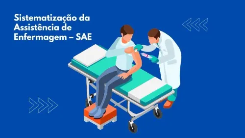
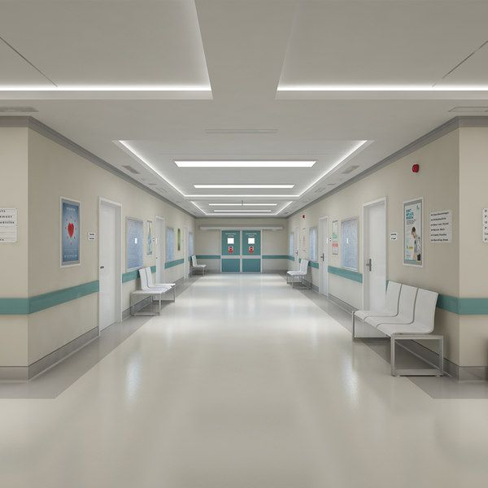
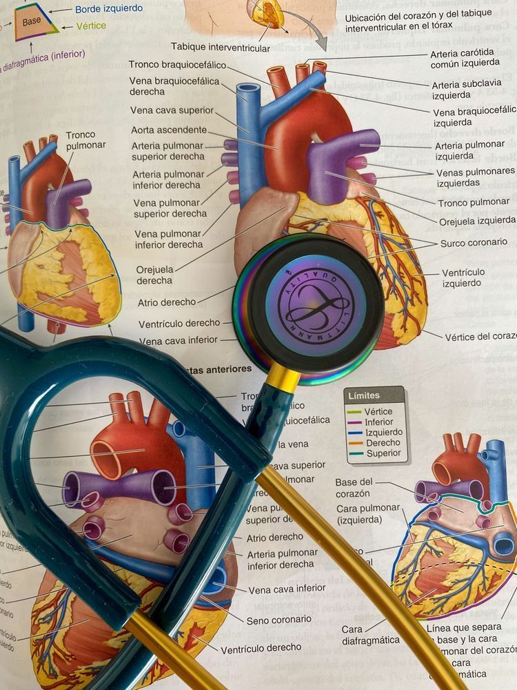

O que é SAE?
A Sistematização da Assistência de Enfermagem (SAE) é uma ferramenta fundamental para a organização do trabalho profissional da enfermagem. Ela orienta o cuidado individualizado, documenta a prática e fortalece a identidade da profissão.
Quais são as 5 etapas da SAE?
- 1. Coleta de dados (ou histórico de enfermagem): Levantamento de informações sobre o paciente.
- 2. Diagnóstico de enfermagem: Julgamento clínico sobre as respostas humanas às condições de saúde.
- 3. Planejamento: Estabelecimento de objetivos e estratégias de cuidados.
- 4. Implementação: Execução das ações planejadas.
- 5. Avaliação: Verificação dos resultados e replanejamento, se necessário.
Benefícios da SAE na Qualidade do Cuidado
A implementação efetiva da SAE contribui significativamente para a melhoria da qualidade da assistência de enfermagem. Ao sistematizar o cuidado, os profissionais conseguem aplicar conhecimentos teóricos na prática, promovendo uma assistência mais segura e eficaz. Além disso, a SAE fortalece o vínculo entre enfermeiros e pacientes, resultando em uma relação mais humanizada e centrada nas necessidades individuais.
Desafios na Implementação da SAE
Apesar dos benefícios, a implementação da SAE enfrenta obstáculos, como a sobrecarga de trabalho dos enfermeiros, falta de recursos humanos e insuficiente apoio institucional. Esses fatores dificultam a aplicação adequada das etapas da SAE, comprometendo a qualidade do cuidado prestado. A ausência de capacitação contínua e a resistência a mudanças também são barreiras significativas.
Fonte: Escola Anna Nery - SciELO
Importância da Capacitação e Educação Continuada
A capacitação dos profissionais de enfermagem é fundamental para a efetiva implementação da SAE. Programas de educação continuada e treinamentos específicos sobre as etapas da SAE e o uso de classificações padronizadas, como NANDA, NIC e NOC, são essenciais para aprimorar a prática clínica. Estudos indicam que a formação adequada dos enfermeiros está diretamente relacionada à qualidade da assistência e à satisfação dos pacientes.
Participação da Equipe de Enfermagem na SAE
A integração de toda a equipe de enfermagem, incluindo técnicos e auxiliares, no processo de SAE é crucial para o sucesso da sistematização do cuidado. No entanto, pesquisas revelam que muitos profissionais de nível médio desconhecem sua participação nas etapas da SAE, evidenciando a necessidade de maior envolvimento e esclarecimento sobre suas funções dentro do processo.
Fonte: Escola Anna Nery - SciELO
Estudo de Caso: Dona Elza
Dona Elza, 82 anos, viúva, reside com a neta de 25 anos. É portadora de hipertensão arterial sistêmica, início de demência leve e osteoartrite nos joelhos. A neta levou a paciente à unidade de saúde após uma queda em casa, durante a noite. Dona Elza relata dores nos joelhos, cansaço e episódios de confusão. Apesar de usar os medicamentos prescritos, esquece frequentemente os horários. Nega febre, mas apresenta edemas em membros inferiores. Dados do exame: PA 150/92 mmHg, FC 90 bpm, FR 20 irpm, T 36,4°C. Refere sono não reparador.
Esse estudo de caso exemplifica a importância da SAE na identificação de diagnósticos de enfermagem como risco de quedas, confusão mental, dor crônica e padrões de sono perturbado. Intervenções incluem orientação sobre a medicação, medidas para segurança domiciliar, avaliação contínua da cognição e controle da dor.
Questões da SAE sobre o caso:
-
1. Dados subjetivos e objetivos:
- Subjetivos: dores nos joelhos, cansaço, confusão, sono não reparador.
- Objetivos: 82 anos, hipertensa, demência leve, osteoartrite, queda, edemas, PA 150/92 mmHg, FC 90 bpm, FR 20 irpm, T 36,4°C.
- 2. Metas esperadas: Reduzir risco de quedas, aliviar dor, melhorar sono, aumentar adesão à medicação, reduzir confusão, prevenir complicações.
- 3. Intervenções de enfermagem: orientar sobre medicação, monitorar sinais vitais, implantar medidas de segurança, avaliar cognição, encaminhar para fisioterapia, escuta ativa.
- 4. Avaliação da eficácia: reavaliar sono e cognição, verificar adesão à medicação, ocorrência de quedas, sinais vitais e edemas.
- 5. Envolvimento da família: orientar neta sobre cuidados, medicação, segurança, participação nas intervenções.
- 6. Orientações ao paciente: tomar medicação corretamente, evitar quedas, manter rotina de sono, atividades cognitivas, procurar ajuda em caso de piora.
Fonte: Estudo de caso apresentado em sala de aula (2025).
Referências
ROSSETTO, Édina Gonçalves et al. Percepção de enfermeiros sobre os benefícios da Sistematização da Assistência de Enfermagem. Revista Gaúcha de Enfermagem, Porto Alegre, v. 36, n. 2, p. 102-109, 2015. Disponível em: https://www.scielo.br. Acesso em: 18 mar. 2023.
ROCHA, Ana Paula Silva; SILVA, Edilane Cristina da; SILVA, Janeina Rosendo da. Desafios na implantação da Sistematização da Assistência de Enfermagem em uma unidade básica de saúde. Escola Anna Nery, Rio de Janeiro, v. 24, n. 4, 2020. Disponível em: https://www.scielo.br. Acesso em: 18 mar. 2023.
LIMA, Dalva Maria Batista; CAMPOS, Ana Maria; NUNES, Valéria Lopes. Capacitação profissional e Sistematização da Assistência de Enfermagem. Revista de Pesquisa Cuidado é Fundamental Online, Rio de Janeiro, v. 9, n. 4, 2017. Disponível em: https://seer.unirio.br. Acesso em: 18 mar. 2023.
Outras fontes: Escola Anna Nery.
Entre em contato conosco
Se você quiser saber mais sobre SAE ou segurança do paciente. clique aqui para acessar nosso material completo ou envie uma mensagem pelos canais abaixo.
Ou ligue para:
(66) 98444-3942